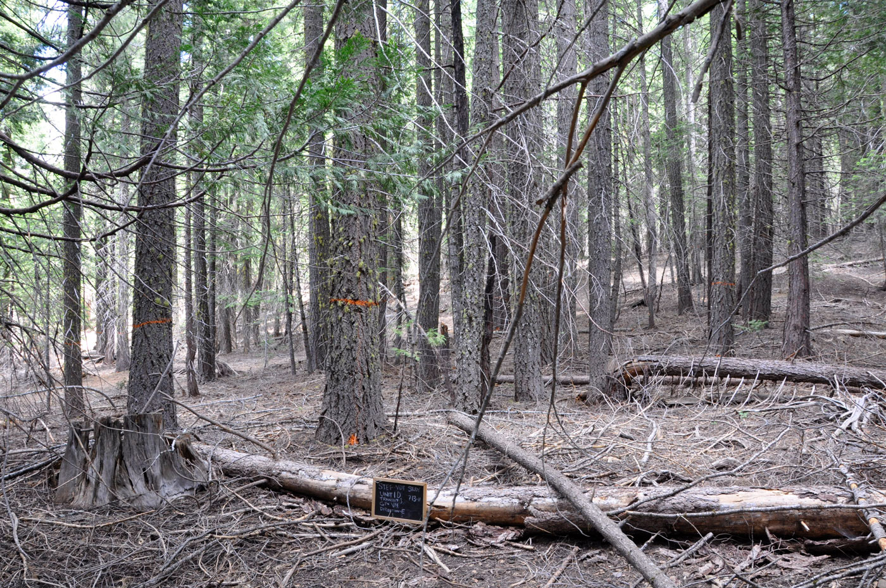
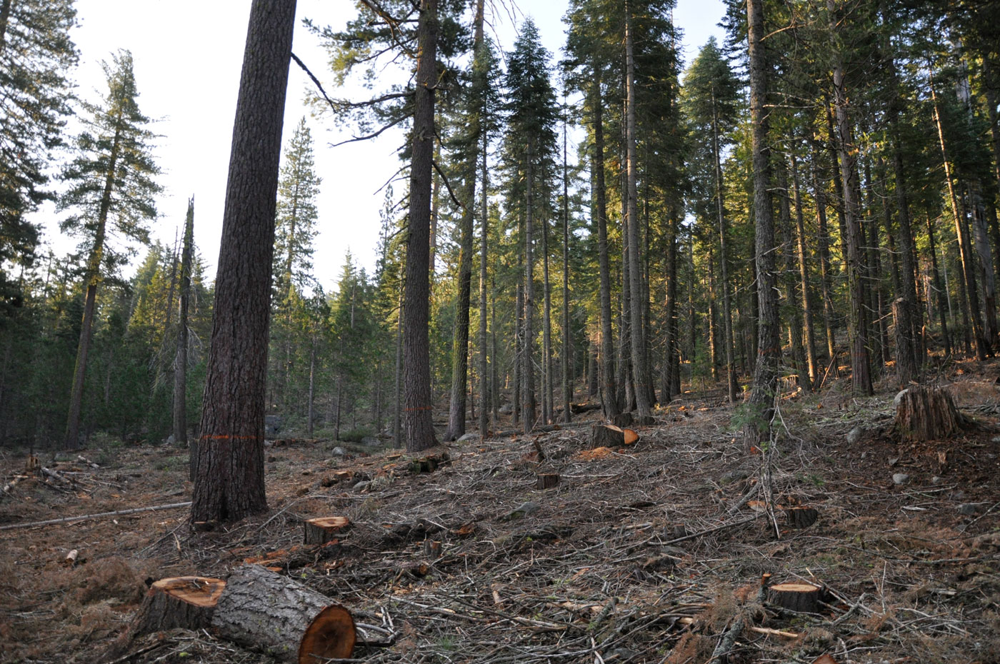

새 나무를 심었다면, 숲을 돌보는 일은 끝난 걸까요?
질문을 마음에 두고 읽어 보세요. 답은 여러 가지일 수 있어요.숲에서 얻는 것은 나무만이 아니에요
공책의 종이, 나무 연필, 책상과 의자에 쓰이는 목재를 생각해 봅시다. 이런 물건의 재료를 숲에서 얻을 수 있습니다. 산림 자원에는 목재처럼 우리 생활에 직접 이용되는 자원이 있습니다. 나무를 이용해 물건을 만들고, 그 물건을 오래 쓰는 일은 산림 자원의 이용과 이어집니다.
숲은 재료를 주는 동시에 많은 생물의 보금자리입니다. 나무와 풀은 광합성을 하며 이산화탄소를 흡수하고, 뿌리와 숲의 바닥은 흙과 물이 머무는 데 영향을 줍니다. 사람들은 숲을 걸으며 쉬기도 합니다. 따라서 숲의 가치를 나무를 얼마나 많이 얻을 수 있는지만으로 판단해서는 안 됩니다.
나무는 다시 자라지만 하루아침에 큰 나무가 되지는 않습니다. 우리가 쓰는 속도가 숲이 회복되는 속도보다 빠르면 숲은 줄어들 수 있습니다. 지금 목재를 얻는 일과, 미래에도 숲과 함께 살아갈 수 있도록 돌보는 일을 함께 계획해야 합니다.
베어 낸 뒤에는 다음 숲을 준비해요
목재를 얻기 위해 나무를 베었다면 그곳에 다음 숲이 자랄 수 있도록 해야 합니다. 지역의 기후와 땅의 상태에 알맞은 나무를 심는 일이 한 방법입니다. 나무를 심어 숲을 조성하는 일을 조림이라고 부릅니다. 어떤 숲에서는 자연적으로 자라는 어린나무가 회복되도록 돕기도 합니다.
묘목을 심는 것만으로 건강한 숲이 완성되는 것은 아닙니다. 어린나무가 잘 자라는지 살피고, 필요할 때 주변의 덩굴이나 자람을 방해하는 풀을 관리해야 합니다. 병해충과 산불로 숲이 크게 훼손되지 않도록 살피는 일도 중요합니다. 다시 심기와 꾸준한 돌봄은 이어져 있습니다.
오래된 숲이나 보호가 필요한 생물의 서식지는 함부로 바꾸지 않아야 합니다. 숲마다 목적과 상태가 다르므로 전문가가 살핀 뒤 필요한 관리 방법을 정합니다. “나무를 새로 심으면 어떤 숲이든 베어도 된다”는 뜻은 아닙니다.
숲가꾸기는 나무의 상태를 살피는 일이에요
같은 장소에 나무가 매우 빽빽하게 자라면 빛과 공간을 얻기 위한 경쟁이 커질 수 있습니다. 목재 생산 등을 위해 관리하는 숲에서는 전문가가 일부 나무를 골라 베어 남은 나무의 자람을 돕기도 합니다. 이 작업을 솎아베기라고 합니다. 숲의 나이, 종류, 생태적 특성을 고려해 알맞게 해야 합니다.
숲가꾸기에는 어린나무를 돌보기, 필요한 가지를 정리하기 등 여러 작업이 있습니다. 숲을 이용하는 목적과 나무의 건강 상태에 따라 필요한 작업은 달라집니다. 모든 숲에서 같은 양의 나무를 베거나 가지를 자르는 것이 좋은 관리는 아닙니다.
숲을 가꾸며 나온 나무도 쓸모를 찾아 이용할 수 있습니다. 상태와 크기에 따라 목재 제품의 재료나 톱밥 등으로 활용합니다. 다만 숲의 생물에게 필요한 쓰러진 나무까지 무조건 모두 치우는 것이 정답은 아닙니다. 자원의 이용과 생물의 보금자리를 함께 살피는 균형이 필요합니다.
실제 사진으로 보는 숲가꾸기


미국 산림청 연구림의 사례예요. 두 사진은 서로 다른 지점에서 촬영했어요. 나무 사이의 공간과 숲 바닥을 살펴보세요.
사진: 미국 산림청(USDA Forest Service) · 사진 원문·출처 ↗
- 1숲의 상태 조사
- 2관리 방법 결정
- 3필요한 돌봄
- 4자라는 모습 관찰
종이 한 장을 오래 쓰면 숲과 연결돼요
나무로 만든 물건을 오래 쓰면 새 물건을 만드는 데 필요한 재료의 수요를 줄이는 데 도움이 됩니다. 책상은 깨끗하게 사용하고 고쳐 쓰며, 책은 친구와 바꾸어 읽을 수 있습니다. 사용 가능한 물건을 단지 새것이 아니라는 이유로 바꾸지 않는 것도 자원을 효율적으로 이용하는 방법입니다.
종이는 양면을 쓰고, 한쪽만 쓴 종이는 연습장으로 다시 사용할 수 있습니다. 문서를 인쇄하기 전에는 꼭 필요한지와 인쇄할 쪽을 확인합니다. 빈 상자를 그대로 물건 보관함으로 사용하는 것은 형태를 크게 바꾸지 않고 다시 쓰는 재사용의 예입니다.
다 쓴 종이를 모아 새로운 종이의 원료로 만드는 것은 재활용입니다. 종이는 다른 쓰레기와 구분하고, 음식물이나 기름이 묻어 재활용이 어려운 종이는 지역 배출 안내에 따라 처리합니다. 종이를 다시 쓰고 재활용하더라도 모으고 처리하는 과정이 필요하므로, 처음부터 낭비를 줄이는 일이 우선입니다.
재사용
한쪽만 쓴 종이의 뒷면을 연습장으로 쓰기
재활용
폐지를 처리해 새로운 종이의 원료로 만들기
숲을 지키는 실천을 구체적으로 정해요
학교에서는 종이와 나무 물건을 어떻게 이용하고 있을까요? 필요한 수량만 준비하는지, 한 번 쓰고 버리는 종이가 있는지, 아직 쓸 수 있는 책이나 물건을 나눌 수 있는지 살펴봅시다. 집에서는 택배 상자를 다시 쓰거나 사용하지 않는 책을 나누는 실천을 정할 수 있습니다.
숲에 갔을 때는 정해진 길을 걷고 나무와 풀을 함부로 꺾지 않습니다. 불씨가 생길 수 있는 행동을 피하고, 위험한 상황은 어른에게 알립니다. 학생이 숲의 나무를 직접 베거나 가지를 자르는 것은 숲가꾸기 활동이 아닙니다. 우리는 숲을 이해하고 생활 속 낭비를 줄이는 일부터 시작할 수 있습니다.
읽은 것을 나의 말로
나의 탐구 기록장
숲을 관리하는 방법 한 가지와, 학교나 집에서 산림 자원을 아끼는 방법 한 가지를 골라 보세요.
이 기기에 자동 저장돼요. 이름 등 개인정보는 적지 않아도 돼요.
기록은 선생님께 자동 전송되지 않아요. 내려받은 파일이나 복사한 내용을 안내받은 곳에 제출하세요. 공용 기기에서는 다음 학생에게 기록이 보일 수 있어요.
마지막으로, 영상에서 다시 발견해요
야생식물 종자 시드뱅크
YTN 사이언스 · 더 알아보기 · 글에서 찾은 내용을 떠올리며 시청해 보세요.
YouTube에서 보기 ↗숲의 씨앗을 보관하는 일은 미래의 산림 자원을 지키는 데 어떤 도움이 될까요?